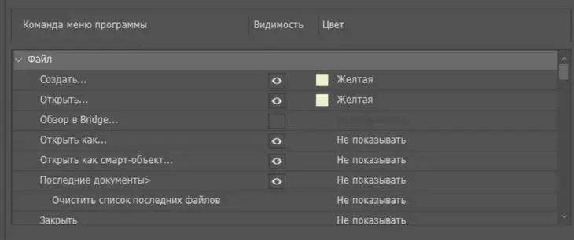

Электронное приложение по работе с мультимедиа
Выполнил Бухаров Роберт Вилсурович ИВТКТ 41-20
Оглавление
Photoshop − это графический редактор для работы с растровыми изображениями. Они состоят из пикселей – квадратиков, которые вы видите при увеличении любой картинки.
Для чего нужен. Photoshop подходит для цветокоррекции и ретуши фотографий, создания коллажей и иллюстраций.
Для чего не подойдет. Для верстки многостраничной печатной продукции и сайтов эта программа не годится, так как перегружает систему. Полиграфию удобнее создавать в InDesign, а веб – в Figma или Sketch. Логотипы, иконки и все, что в дальнейшем нужно будет масштабировать, лучше рисовать в программах, предназначенных для работы с вектором. Созданные в них изображения сохраняют качество, так как не состоят из пикселей, а являются неделимыми фигурами (до сохранения в jpeg или растрирования).
Перед началом работы настройте программу так, чтобы повысилась ее производительность, а вам было удобнее ею пользоваться. Это поможет сэкономить время и улучшить результат.
При желании можно выбрать один из четырех цветов интерфейса (возле цифры 1 на изображении ниже (далее будем использовать просто цифру в скобках)). Для этого зайдите в настройки интерфейса, в меню «Редактирование». Там выберите светло-серый фон, если важна точность цветов на картинке. Если вы используете Mac, то зайдите в меню «Photoshop», далее в «Настройки», в выпадающем меню выберите пункт «Интерфейс». Слишком темное или светлое окружение будет искажать восприятие цветов. По сравнению с черным интерфейсом, изображения будут казаться светлее и насыщеннее, а по сравнению с белым – наоборот. К тому же, выбрав светло-серый, вы будете читать темный шрифт на светлом фоне – это привычнее, чем на выворотке.
По той же причине стоит выбрать средний серый цвет заливки окрестностей вокруг картинки (2). Серый не будет мешать правильному восприятию цветов.
Выберите внешний вид интерфейса
Определитесь, сколько места предоставить Photoshop. Сделать это можно в том же окне, в разделе «Производительность». Для нормальной работы достаточно 8 Гб. Но не отдавайте под него все место – оставьте 10-20 % для других программ.
Когда места для работы не хватает, временно ненужная информация сбрасывается на жесткий диск и подгружается при необходимости. Если она будет сбрасываться на системный диск (в большинстве случаев это диск «C»), то работоспособность программы может снижаться. Поэтому в разделе «Временные диски» убедитесь, что у вас выбран не диск «C». Если у вас есть SSD, то лучше поставить его – программа будет работать быстрее.
Отведите на работу Photoshop побольше места и выберите несистемный диск для сброса информации
Инструменты в Photoshop делятся на два вида: для рисования и все остальные. Перейдите во вкладку «Курсоры». Для первого вида выберите «Нормальный кончик кисти» (1). При этом будет отображаться кружок, определяющий границы мазка – это наиболее естественное представление о кисти.
Для второго вида поставьте галочку напротив пункта «Точный» (2). Вместо иконки инструмента будет отображаться точный курсор. Используя его, легче понять, какой вы участок выбираете.
Выберите отображение курсора
Некоторыми командами вы пользоваться не будете. В разделе «Меню», находящемся в пункте «Редактирование», их можно выключить, чтобы не отвлекали. Для этого уберите значок глазика с ненужных команд. Те же, которыми вы будете пользоваться чаще всего, например, «Сохранить» или «Открыть», пометьте цветом, чтобы их было легче находить. Если отключенная операция вдруг понадобится, вы можете выбрать внизу любого пункта «Показывать все пункты меню». Вернуть настройки по умолчанию можно в этом же окне.
Скройте ненужные команды и выделите наиболее востребованные
В разделе «Единицы измерения и линейки» поставьте привычные вам миллиметры вместо дюймов.
Выберите привычные единицы измерения
В пункте «Редактирование» зайдите в раздел «Меню» и перейдите во вкладку «Клавиатурные сокращения». Напротив большинства команд стоят комбинации клавиш, которыми они вызываются. Их можно переназначить, кликнув на существующее назначение, или задать, если оно отсутствует. С помощью комбинаций горячих клавиш можно вызывать команды гораздо быстрее, чем методом поиска в меню. Поэтому выучите те, которыми пользуетесь наиболее часто – это существенно сэкономит время. Чтобы первое время было проще, распечатайте наиболее популярные комбинации горячих клавиш и подглядывайте в эту шпаргалку при необходимости.
Пользуйтесь клавиатурными сокращениями
Практические задания:
Основная проблема при работе с Photoshop − найти нужный инструмент или команду. Но если знать, что и где искать, работать будет гораздо быстрее и приятнее. Чтобы свободно ориентироваться в программе, разберем три основных органа управления.
Основные органы управления Photoshop
Строка основного меню находится сверху и состоит из одиннадцати пунктов. В каждый из них входят команды, сгруппированные по определенным признакам.
Файл. В пункте «Файл» собраны все опции, отвечающие за взаимодействие программы с внешним миром: «Сохранить», «Открыть изображение», «Экспортировать», «Распечатать» и т.д.
Редактирование. Здесь сгруппированы команды, которым не нашлось места в других пунктах. Например, «Отменить», «Повторить», «Трансформирование слоя», а еще «Меню», «Настройки» и «Клавиатурные сокращения».
Изображение. Сюда собраны команды для коррекции изображений. Здесь можно изменить размер, яркость или подкорректировать цвета.
Слои. Так как основная работа в Photoshop связана именно со слоями, это самое большое ниспадающее меню. В нем собраны все команды, касающиеся слоев.
Текст. В этот пункт собраны команды для работы с текстом. Скорее всего, заглядывать сюда вы будете редко. Так как основные текстовые настройки находятся в окнах «Символ» и «Абзац».
Выделение. Если вы ищете команды, связанные с выделением участков изображения, то это здесь. В этом пункте можно отменить все выделения, инвертировать, деформировать, растушевать границы или сохранить.
Фильтры. Здесь находится набор фильтров, которые можно накладывать на изображения. Если существующих покажется мало, дополнительные фильтры можно найти в интернете.
3D. Photoshop умеет создавать несложные 3D-модели и обрабатывать созданные в других программах. Например, в 3ds Max. Функциональность простая: можно вращать модели, натягивать на них поверхности, освещать с разных сторон. Учтите, что работа в этом режиме перегружает память, отчего Photoshop может подвисать. Для 3D существуют более подходящие программы. Поэтому не будем в этой статье касаться данного пункта.
Просмотр. В пункте «Просмотр» находятся функции, которые меняют не саму картинку, а ее отображение на экране. Вам — сюда, если надо уменьшить или увеличить фотографию, поменять режимы экрана, включить или выключить отображение вспомогательных элементов, таких как направляющие, линейки, границы выделения.
Окно. В этом пункте сгруппированы команды для работы с окнами. Отсюда можно вызвать любое окно и менять отображение открытых в программе картинок: показывать их во вкладках или одновременно выводить на экран.
Где находятся и как добавлять. Собраны они в правой части экрана. Включаются в пункте «Окно», который находится в основном меню.
Какие окна нужны. Это зависит от задач. Для начала подойдет и набор по умолчанию, который по необходимости можно корректировать.
Как расставлять. Включив окно в основном меню, вы увидите его в отдельной вкладке. Его можно сворачивать, растягивать и сжимать.
Сворачивайте и меняйте размер
Связывайте между собой. Для этого перетащите одно окно к другому за ярлык с названием до появления синей полоски. Теперь они будут сворачиваться и перетаскиваться вместе. Если нужно вставить третье окно между ними, перетащите его к их стыку. Чтобы окна открывались в одном окне и переключались с помощью вкладок, перетаскивайте не на стык, а накладывайте одно на другое
Связывайте
Объединяйте
Прикрепите отдельные окна к панели окон, чтобы они не загораживали рабочую область. Для этого перетащите их к правому краю до появления синей полоски.
Сгруппируйте нужные окна на правой панели
Как сохранить. Чтобы сохранить расположение окон, перейдите во вкладку «Рабочая среда» в пункте «Окно», выберите «Новая рабочая среда» и нажмите «Сохранить». Вместе с окнами там можно сохранить клавиатурные сокращения, вкладки в пунктах меню и состояние панели инструментов. По умолчанию предлагается несколько рабочих сред для разных целей. Например, для рисования или обработки фотографий.
К сохраненной среде можно вернуться, выбрав ее в том же вложенном меню и нажав «Сбросить».
После настройки сохраните расположение окон, инструментов и горячие клавиши, чтобы вернуться к ним позже
Панель инструментов находится слева (1). Сюда собраны все инструменты ручного редактирования. Выбрав один из инструментов, вы увидите его настройки на панели «Опции» (2), находящейся под основным меню. Большинство иконок на панели содержат вложенные инструменты со схожими функциями (3), например, вместе с «Кистью» находится «Микс-кисть» и «Карандаш». Чтобы их вызвать, кликните правой мышью по иконке.
Панель инструментов в Photoshop
Чтобы открыть изображение, в пункте «Файл» нажмите «Открыть» и выберите картинку на компьютере или воспользуйтесь сокращением «Ctrl+O» (На Mac: «Cmd+O»). Во вложенном меню «Последние документы» находятся картинки, которые вы недавно открывали. Их количество можно увеличить в настройках, выбрав больший период запоминания.
Откройте файл для работы
Масштаб изображения изменяется четырьмя основными способами:
Если нужно быстро вернуться к общему виду, нажмите «Ctrl + 0» (на Mac «Cmd + 0») − изображение займет всю рабочую область.
Также масштабировать можно с помощью «Увеличительного стекла», которое вызывается из панели инструментов либо с помощью модификатора «Ctrl + пробел» (на Mac: «Cmd + пробел»). Отличие модификаторов от клавиатурных сокращений заключается в том, что они не выполняют какую-либо команду, а временно меняют назначение курсора.
Масштабируйте работу горячими клавишами
Быстро перемещаться по увеличенному изображению поможет инструмент «Рука». Для этого зажмите пробел и передвигайтесь с помощью мыши. Это самый удобный способ. Также для этого можно использовать окно «Навигатор» и полосы прокрутки, появляющиеся внизу и справа при приближении.
Перемещайтесь по картинке с помощью «Руки» − так быстрее
Чтобы быстро отменить действие, нажмите «Ctrl + Z» (на Mac «Cmd + Z»), а при повторном нажатии комбинация вернет внесенное до этого изменение. Чтобы переключиться на несколько шагов назад, используйте сокращение «Alt + Ctrl + Z» (на Mac «Option + Cmd + Z») , вперед – «Shift + Ctrl + Z» (на Mac «Shift + Cmd + Z»). Вернуться сразу на много действий можно в окне «История».
«Alt + Ctrl + Z» − несколько шагов назад, «Shift + Ctrl + Z» − несколько шагов вперед
Окно «История» − сразу вернуться на много действий
Чтобы редактировать размер и разрешение, в пункте «Изображение» выберите «Размер изображения» и задайте нужную ширину и высоту(1). Чтобы картинка менялась пропорционально при изменении одной из сторон, нажмите на иконку цепочки (2). А если хотите с размерами менять и разрешение (3), то снимите галочку с пункта «Ресамплинг» (4).
Меняйте размер и разрешение в окне «Размер изображения»
С помощью инструмента «Рамка» можно добавлять фон, обрезать или наклонять картинку. Если нужно обрезать ее до конкретных размеров, введите их в специальные поля на панели «Опции» или выберите в контекстном меню, всплывающем по правому клику на изображение.
Используйте «Рамку», чтобы расширить или обрезать края картинки
Если нужно растянуть фон с учетом содержимого, в «Опциях» нажмите на соответствующую иконку.
Добавьте фон с помощью «Рамки»
Работа в Photoshop похожа на создание аппликаций, только вместо слоев бумаги в нем используются виртуальные слои. Благодаря им вы можете удалять, редактировать, передвигать отдельные объекты или участки изображения, а также точечно на них воздействовать, не боясь задеть другие картинки на прочих слоях.

Окно «Слои»
В программе «Слои» находятся на правой панели (1). Если нет, то включите их в пункте «Окно» в основном меню. Чтобы изменить или переместить слой, кликните по нему левой кнопкой.
Создать. Создавайте новый слой каждый раз, когда совершаете новое действие с фотографией. Для этого либо нажмите на иконку (2) внизу окна, либо выберите команду в пункте «Слои», либо воспользуйтесь комбинацией «Ctrl + Shift + N» (на Mac «Cmd + Shift + N»).
Назвать. Когда слоев несколько, в них легко ориентироваться. Когда же их накапливается много, можно запутаться, какой элемент на картинке к какому слою относится. Чтобы было удобно искать нужный слой, им можно давать названия. Для этого кликните два раза по существующему названию слоя.
Удалить. Удалить слой можно при помощи кнопки Delete в контекстном меню, которое вызывается кликом правой мыши по слою, либо перенеся его на значок корзины (3).
Переместить. Чтобы подвинуть слой в плоскости картинки, используйте инструмент «Перемещение».
Поменять порядок. Перетащите слой с помощью мыши.
Меняйте слои местами с помощью левой кнопки мыши
Скопировать. Чтобы скопировать слой, воспользуйтесь быстрыми клавишами «Ctrl + J» (на Mac «Cmd + J») или перетащите его на иконку создания нового слоя (2). Если неудобно лезть в окно со слоями, выберите инструмент «Перемещение», зажмите Alt (на Mac — Option) и перетащите слой с картинки в сторону с помощью мыши.
Скопируйте слой, перенеся на значок «Создать новый слой»
Сделать прозрачным. Регулировать прозрачность слоя (9) можно с помощью двух полей: «Непрозрачность» и «Заливка». «Непрозрачность» регулирует слой вместе с наложенными на него эффектами. А «Заливка» − непосредственно сам слой. Например, уменьшая показатель в заливке, тень или обводка, наложенные на слой, будут оставаться без изменений.
«Заливка» отвечает за слой без эффектов, «Непрозрачность» − за весь
Объединить. Слои удобно объединять, когда они относятся к одному объекту на картинке, и если изменять их по отдельности вы больше не собираетесь. Чтобы объединить, выделите нужные, правым кликом по слоям вызовите контекстное меню и нажмите «Объединить». А чтобы связать слои временно, нажмите «Связать».
Залить цветом. Выберите нужные цвета на панели инструментов, возьмите инструмент «Заливка» и нажмите «Alt + Backspace» (на Мас «Option + Backspace»), чтобы залить основным цветом, или «Ctrl + Backspace» (на Mac «Cmd + Backspace»), чтобы залить фоновым.
Деформировать. Нажмите «Ctrl + T» (на Мас «Cmd + T»), чтобы трансформировать слой. Правым щелчком мыши вызовите контекстное меню и выберите один из четырнадцати способов деформации. С помощью мыши изменяйте его размер, перемещайте и искажайте. Если хотите, чтобы слой сохранял пропорции при уменьшении или увеличении, зажмите Shift.
Наложить эффекты. Правым кликом мыши по слою вызовите меню и выберите «Параметры наложения». В этом окне можно задать обводку и тени, создать тиснение, наложить градиент или свечение. Чтобы включить эффект, поставьте галочку напротив его названия. Чтобы изменить его параметры − кликните по названию эффекта. Если рядом с названием есть значок плюсика, значит эффект можно дублировать: на один слой наложить несколько одинаковых эффектов с разными настройками. Например, это полезно, когда нужно сделать несколько теней для одного объекта, который освещается несколькими источниками света. Также эффекты можно включить и через меню, скрывающееся за иконкой fx (4) − оно полностью дублирует «Параметры наложения».
Накладывайте эффекты на слои в «Параметрах наложения»
Изменить режим наложения. Photoshop позволяет выбирать, как будет накладываться верхний слой по отношению к нижнему. Для этого в окне со слоями существует поле «Режимы наложения» (8). Эти режимы делают изображение прозрачным, более контрастным или просвечивающими в определенных тонах.
Эта функция дает возможность добиваться наложения любых эффектов или фильтров на верхний слой, меняя нижний. А рисуя кистью в одном из параметров, можно создавать свет, тени и блики. Для наложения тени выберите режим «Умножение», «пипеткой» возьмите образец цвета предмета, на котором должна быть тень, уменьшите непрозрачность и жесткость кисти − она будет рисовать мазками похожими на тень. Чтобы наложить свет, рисуйте кистью в режиме «Экран». Для бликов используйте «Мягкий свет» и белую кисть.
Используйте разные режимы наложения, чтобы накладывать эффекты, например, блики
Наложить маску. «Встаньте» на нужный слой и нажмите на иконку, похожую на японский флаг (5). Рядом со слоем появится его маска. Теперь черной кистью можно скрыть часть слоя в маске, а белой – вернуть обратно. Если вырезать область или стереть ее с помощью «Стерки», то это действие можно будет вернуть только отменой.
Наложите маску, чтобы спрятать часть слоя
Создать обтравочную маску из слоя. Эта команда позволяет накладывать верхний слой на нижний. То есть нижний становится окном в верхний, к которому вы применили маску. Так, например, на текст накладывается фон.
Закрепить. Закрепите слой, если хотите, чтобы ни одно действие с картинкой его не коснулось. Для этого «встаньте» на нужный слой и нажмите на иконку с замочком (7). Вы не сможете его двигать, перемещать, рисовать на нем или накладывать эффекты – для программы он будет неприкосновенен.
Обычный растровый слой. Это просто элемент изображения, находящийся на отдельном слое. Его можно редактировать и проделывать с ним все, что описано выше.
Фоновый. Самый нижний закрепленный слой (с замочком). Его можно сделать обычным, сняв замочек по клику. Также любой слой можно сделать фоновым, переместив в самый низ и закрепив.
Текстовый. Текст, написанный на картинке, автоматически становится новым слоем. С ним можно проделывать все действия, что и с обычным, плюс те, которые описаны в разделе «Текст».
Корректирующий. Это прозрачный слой, не являющийся каким-либо эффектом. Он накладывается поверх обычного слоя, выполняя функцию цветного стекла, помещенного над картинкой. Чтобы его создать, нажмите на иконку, похожую на «Инь-ян» (6), и выберите слой с нужным видом коррекции. Он нужен для создания фильтров и цветокоррекции (подробнее об этом в следующем разделе).
Смарт-объект. Превратите растровый слой в смарт-объект (или наоборот) в контекстном меню слоя. После этого он как бы пакуется в папку. Чтобы воздействовать на слой, кликните по нему дважды. Он откроется отдельно в новой вкладке в Photoshop. После изменений в слое сохраните их с помощью сочетания клавиш «Ctrl + S» (на Мас «Cmd + S»), чтобы они вступили в силу на основном изображении. Это удобно, когда требуется более детальная работа с областью. Например, при создании мокапов.
Слой-заливка. Позволяет залить слой цветом, градиентом или узором. Слой-заливка является отдельным слоем, к которому можно отдельно применить режимы наложения.
Редактируйте смарт-слой в отдельной вкладке, например, для создания мокапа
Практические задания:
В этом разделе я расскажу, как настраивать яркость и контрастность фотографий, убирать лишние оттенки и корректировать цветовой баланс.
Все настройки цветокоррекции есть в пункте «Изображение». Но, по возможности, пользуйтесь корректирующими слоями. Они накладывают коррекцию отдельным слоем, который удобно скрывать и редактировать (как создавать корректирующие слои – в разделе «Слои»).
Что такое кривая. Вызвав инструмент «Кривые», вы видите график. На оси X показывается яркость: от самого темного участка к самому светлому, слева направо. На оси Y показывается количество пикселей на картинке, соответствующих яркости по оси X.
Зависимость графика от изображения. Определив, какие участки на графике каким областям изображения соответствуют, вы поймете, в каком месте и куда двигать кривую. Сделать это можно по трем параметрам:
Соотнести график с фотографией поможет инструмент, скрывающийся за иконкой руки. Выбрав его и передвигая курсор по фотографии, вы будете видеть, как перемещается ползунок на кривой. Он и будет соответствовать той части фото, на которую наведен курсор. По клику на месте ползунка появится точка. С ее помощью можно изменять яркость соответствующего участка. Такие опорные точки можно ставить и по клику на саму кривую. Чтобы их убрать, просто перетащите точки за пределы графика, захватив мышью.
Определите, как график соотносится с картинкой
Как кривая меняет картинку. Есть четыре базовых правила, описывающих работу кривой:
Что происходит, если выше
Иллюстрация влияния кривой в виде буквы S
Так меняется контраст
Чтобы воздействовать на картинку в областях с определенной яркостью, с помощью опорных точек зафиксируйте кривую на участке, который не нужно менять.
Меняйте только определенные участки фотографии с помощью опорных точек
Полноконтрастность фотографии. Открывая график с кривой на некоторых изображениях, видно, что пиксели занимают не всю ось X: крайние правый и левый участки графика остаются пустыми. Это значит, что фотография не полноконтрастная: недостаточно насыщенная, блеклая. Чтобы это исправить, приведите ее к полноконтрастному виду. Для этого:
Сделайте фотографию полноконтрастной для придания глубины фотографии
Удаление лишних оттенков. Удалите с фотографии оттенки, которых там не должно быть. Для этого переключитесь на другие цветовые каналы (красный, зеленый или синий) в окне со свойствами кривой и корректируйте ее там. Например, когда фото желтит, перейдите в синий канал и немного поднимите кривую.
Уберите лишние оттенки в цветовых каналах
Чтобы сравнить изменения, переключайтесь между было/стало с помощью иконки глазика внизу. А если изменения не понравились, то с помощью стрелочки, что слева от иконки с глазиком, сбросьте все изменения на кривой.
Выбрав «Цветовой тон/Насыщенность», в окне вы увидите три шкалы: «Цветовой тон», «Насыщенность» и «Яркость». Изменения, вызванные в цветах перемещением ползунков на любой из шкал, будут отображаться на самой нижней полоске (1). Полоса над ней показывает изначальные цвета для сравнения.
«Цветовой тон» (2) позволяет смещать цвета по цветовому кругу. С помощью него можно перекрасить любой одноцветный участок на снимке.
Ползунок насыщенности (3) изменяет фото от черно-белого до кислотно-цветного.
Регулировка яркости (4) позволяет затемнять и осветлять фотографию.
В поле вверху, где по умолчанию стоит «Все» (5), можно выбрать, какой конкретно цвет на фотографии будут менять три шкалы ниже. Оттенки этого цвета можно корректировать с помощью пипеток (6) и ползунков, появляющихся на полоске снизу.
При выборе цвета учитывается не весь цветовой круг, а его часть. Пипеткой выделите на картинке цвет, который надо подкорректировать, и работайте со шкалами. Если вместе с нужным участком изменился цвет другого, сдвиньте ползунки внизу ближе к нужному цвету и подальше от того, который менять не хотите.
Все настраиваемые элементы
Настройте цветовой тон и насыщенность
Чтобы увеличить насыщенность цветов, используйте инструмент «Сочность».
Придайте картинке сочность
В свойствах этого инструмента – три регулятора (1). При смещении ползунка к определенному цвету изменяются тона на фотографии. Переместили в сторону желтого − картинка желтеет. К красному − краснеет. Причем в поле (2), которое над ползунками, можно выбирать, в каких тонах изменять цвета: в тенях, светах или средних тонах. Но цвет на тона накладывается очень неточно, захватывая почти весь спектр. Поэтому для коррекции этот инструмент не подойдет. Он понадобится для стилизации и тонировки, например, чтобы наложить какой-нибудь оттенок на фото.
Регуляторы цветбаланса
Наложите цветной фильтр на изображение для стилизации фотографии
Этого инструмента нет в корректирующих слоях. Чтобы его выбрать, зайдите в пункт «Изображение» и в выпадающем меню «Коррекция» выберите вкладку «Тени / Света». С помощью этого инструмента отдельно затемняйте и осветляйте темные (1) и светлые (2) области. В настройках каждой из них существует три шкалы: «Эффект» (3), «Тон» (4) и «Радиус» (5). «Тон» отвечает за затемнение и осветление. «Радиус» − за растушевку света или тени. «Эффект» − за прозрачность эффекта, вызванного двумя предыдущими настройками.
Здесь можно настраивать тени и свет
Настройте темные и светлые области
Когда открываете любой инструмент цветокоррекции, каждый ползунок выкручивайте до крайних точек, чтобы понять, какой за что отвечает.
Практические задания:
Сделать коллаж, удалить или переместить объект, наложить эффект на часть картинки... − без выделений в Photoshop не обойтись. Поэтому инструментов и способов выделения в нем много. Рассмотрим основные восемь из них.
Инструмент «Области» выделяет с помощью фигур: овалов, прямоугольников, линий. Им удобно быстро выделять объекты на однородном фоне, геометрически простую фигуру или когда с предметом можно захватить немного фона.
Выделяйте с помощью областей предметы на однородном фоне
Есть три вида лассо: «Обычное», «Прямолинейное» и «Магнитное». «Обычным» очерчивайте произвольный участок, будто в руках карандаш или кисть. «Прямолинейным» выделяйте линиями: с помощью него можно обвести геометрическую фигуру любой формы. «Магнитным» выделяйте по границе любого предмета: при обведении выделение будет липнуть к его контуру. Им удобно обводить сложные объекты на однородном фоне. Если фон сложный, «Магнитное лассо» может неправильно распознать границы предмета, соответственно, неправильно выделить.
«Магнитным лассо» выделяете, когда нужно точно обвести предмет на однородном фоне
«Волшебная палочка» обводит области похожего цвета. Для этого инструмента важно, чтобы выделяемый объект сильно отличался от фона по цвету. Допустимое отклонение цвета настройте в опциях этого инструмента в поле «Допуск»: чем больше в нем цифра, тем более неоднородную область выделит программа.
«Волшебной палочкой» выделяйте однородные по цвету области
«Быстрое выделение» работает по тому же принципу, что и «Волшебная палочка». Отличие в том, что область выделения можно регулировать. Меняя назначение курсора, создавайте выделение или убирайте, если захватили лишнее и нужно скорректировать область. Меняя величину курсора, регулируете, насколько большая площадь будет выделяться вокруг него.
«Быстрым выделением» выделяйте и корректируйте однородные участки
Инструмент «Цветовой диапазон» находится в пункте «Выделения» в меню. Он позволяет выделить участки на фотографии по цвету. Для этого с помощью курсора выберите нужный цвет. Пипеткой с плюсом дополнительно добавляйте оттенки, с минусом − удаляйте. Чтобы увеличить или уменьшить разброс допустимых цветов для выделения, переставляйте ползунок на шкале «Разброс». Также можно выделять цвета не на всей фотографии, а лишь в диапазоне. Для этого поставьте галочку напротив «Локализованные наборы цветов» и отрегулируйте площадь выделения на шкале «Диапазон». Таким способом можно выделять сложные объекты типа травы или деревьев, которые сильно отличаются по оттенкам и разбросаны по картинке.
С помощью инструмента «Цветовой диапазон» выделите нужные цвета
«Перо» (P) − это не прямой инструмент выделения. С помощью пера создайте «Фигуру» или «Контур» (выбирается в опциях инструмента), а после – выделите.
«Перо» − лучший инструмент выделения по двум причинам. Первая: после построения области ее можно как угодно изменять с помощью опорных точек на контуре, которые добавляются кликом по нему. Вторая причина в том, что границы области, выделенной «Пером», плавные и не имеют рваных краев.
Есть три вида пера: «Обычное», «Свободное» и «Перо кривизны». «Обычное» обводит прямыми линиями. «Свободное» очерчивает область как карандаш. «Перо кривизны» скругляет все узлы, делая их плавными. Чтобы переключиться между ними, кликните правой кнопкой мыши по иконке «Пера» и выберите нужный вид.
Также у инструмента есть три функции: «Добавить опорную точку», «Удалить опорную точку» и «Угол». Находятся они также в выпадающем меню «Пера». Первые две добавляют и удаляют опорные точки. Третья делает из всех закругленных узлов углы: если с помощью четырех точек очертить пером круг, то «Углом» можно сделать из него квадрат.
Также на опорные точки можно воздействовать инструментом «Выделение узла». По клику на точку появляется что-то вроде усиков или рычажков. Они позволяют более гибко изменять фигуру.
Если нужно плавно и точно выделить предмет сложной формы, воспользуйтесь «Пером»
«Быстрая маска» дает возможность тонко редактировать границы и прозрачность выделения с помощью кисти. Для ее наложения нажмите на значок в самом низу панели инструментов. С помощью «Быстрой маски» можно создавать выделение с нуля либо работать с уже выделенной областью. В этом режиме черная кисть добавляет участок к выделению, белая − удаляет. Для создания разной прозрачности выделений используйте разные оттенки серого: чем светлей − тем прозрачнее. Чем меньше прозрачность выделения, тем слабее будет проявляться эффект, наложенный на изображение. Это пригодится для цветокоррекции, например, когда некоторые участки нужно затемнить меньше, чем остальные.
Создавайте, редактируйте и меняйте прозрачность выделения с помощью «Быстрой маски»
Трансформировать. Нажмите «Трансформировать выделенную область» в пункте «Выделение» или в контекстном меню выделенной области. Кликните правой кнопкой мыши по выделению и выберите нужный режим. Например, с помощью «Искажения» можно сделать тень. Для этого выделите объект, который будет ее отбрасывать, «положите» выделение на поверхность и затемните.
Деформируйте выделение
Менять режимы наложения. В опциях большинства инструментов выделения можно выбрать один из четырех режимов наложения. Первый режим: создавая новое выделение, старое исчезает. Второй (Shift): выделения накладываются друг на друга. Третий (Alt или Option): выделение перекрывает предыдущее. Четвертый (Shift + Alt или Shift + Option): при наложении одного на другое, остается выделенной только область их пересечения.
Создавайте сложные выделения, меняя режимы наложения
Модифицировать. Можно растушевать границы, увеличить или уменьшить площадь выделения на заданные пиксели. Для этого перейдите в раздел «Модификация» в пункте меню «Выделение».
Модифицируйте края выделения
Выделить смежные пиксели. Добавьте к существующему выделению участки, окрашенные примерно в тот же цвет. Сделать это можно с помощью команды «Смежные пикселы» в пункте «Выделение».
Выделите пиксели, окрашенные примерно в тот же цвет
Сделать инверсию. Кликните на выделение правой кнопкой мыши, затем в контекстном меню выберите «Инверсия выделенной области». Все, что было не выделено, выделится вместо изначальной области.
Инвертируйте выделение
Переместить. Выделите область и нажмите «Ctrl + T» (на Mac «Cmd + T») или «Трансформировать выделенную область» в контекстном меню. Теперь участок можно двигать и изменять его размер.
Скопировать или вырезать. Выделите область и нажмите «Ctrl + C» (на Мас «Cmd + C») или «Ctrl + X» (на Мас «Cmd+ X»), чтобы скопировать или вырезать. А затем − «Ctrl + V» (на Мас «Cmd + V»), чтобы вставить участок на новый слой.
Залить. В контекстном меню выберите «Выполнить заливку», чтобы залить выделенную область. Сделать это можно выбранным цветом или с учетом фона. Также в открывшемся окне можно регулировать прозрачность заливки и режим ее наложения.
Залейте выделенную область цветом
Обвести. В контекстном меню слоя выберите «Выполнить обводку», чтобы обвести выделение. В открывшемся окне можно выбрать цвет, расположение обводки, а также прозрачность и режим наложения.
Вызовите инструмент «Текст» (T), кликните левой мышью по изображению или выделите участок и начните писать. Когда закончите редактировать, нажмите Enter, чтобы сохранить результат или ESC, чтобы отменить. Измените написанное, кликнув левой кнопкой мыши по тексту, или переместите (при этом в руках должен быть инструмент «Текст»).
Настройте типографику в окнах «Абзац», «Символ» и «Глифы». Если их нет на правой панели, вызовите в пункте «Окно».
Символы. В окне «Символ» выберите шрифт (1) и его начертание (2). Настройте размер шрифта (3), межбуквенное (4) и межстрочное расстояние (5). Выберите цвет (7). В декоративных целях шрифт можно растянуть по ширине или высоте (6) − этой функцией пользуйтесь с осторожностью, сохраняйте читаемость. В настройках ниже (8) можно изменить регистр, подчеркнуть или зачеркнуть текст.
Настройте текст в окне «Символ»
Абзацы. В окне абзац регулируются настройки, связанные с абзацем: выравнивание (1), отступы (2) и переносы (3).
Укажите, как выровнять текст, настройте отступы и переносы в окне «Абзац»
Глифы. В окне «Глифы» находятся спецсимволы, знаки пунктуации и смайлики.
Дополнительные символы выберите в окне «Глифы»
Сохранение настроек. Если планируете тиражировать текст с одинаковыми настройками, сохраните их — не настраивайте каждый раз по новой. В окне «Стили абзацев» сохраните настройки, связанные с абзацами, нажав «Создать новый стиль абзаца». В «Стилях символов» − с помощью команды «Создать новый стиль символов». Чтобы применить сохраненный стиль к тексту, выделите текст и укажите нужный стиль в тех же окнах.
С текстовым слоем можно проделывать все то же, что и с обычным (подробнее в разделе «Слои») плюс еще несколько действий.
Деформировать. Выберите «Деформировать» в контекстном меню текстового слоя. В открывшемся окне выберите вид деформации (дугой, волной, надутый, закрученный) и настройки (степень деформации, создать искажение по горизонтали или вертикали).
Создавайте композиции из текста с помощью «Деформации»
Написать по контуру или вписать в фигуру. Создайте фигуру любой формы (подробнее в разделе «Фигуры»). Чтобы вписать текст в фигуру, выберите инструмент «Текст» и кликните по ее области. Чтобы писать по контуру фигуры, нажмите на ее границу.
Вписывайте текст в фигуру или пишите по ее контуру
В этом разделе поговорим о том, где брать цвета, как выбрать оттенок, сохранять свои образцы, накладывать и настраивать градиент.
Окна для работы с цветом
В Photoshop есть основной и фоновый цвет (1). Находятся они на панели инструментов. Основной цвет нужен для рисования, заливки, обводки, стирания слоя в режиме маски. Фоновый − для заполнения стираемых областей, восстановления слоя в режиме маски и обводки фигуры.
По умолчанию в качестве основного и фонового цветов используются черный и белый. Чтобы к ним вернуться, кликните по их иконке (7).
Скопировать с изображения. Выберите инструмент «Пипетка» (5) и кликните на тот цвет, который хотите выбрать. В опциях инструмента, в поле «Размер образца», изначально выбран пункт «Точка». Применив «Пипетку», вы скопируете цвет пикселя, на который попали курсором. Этот цвет может сильно отличаться от того, который вы видите. Поэтому поменяйте настройку в поле «Размер образца» на «Среднее 5 x 5». Пипетка будет копировать средний цвет области, состоящей из 25 пикселей.
В палитре. Два раза щелкните по иконке с основным или фоновым цветом для вызова палитры цветов. Чтобы добиться нужного оттенка, в открывшемся окне перемещайте курсор на поле (2) и отрегулируйте ползунок на шкале справа.
С помощью кода цвета. Если известно точное значение цвета, введите его в соответствующее поле (3).
Найти код нужного оттенка можно на сайте color.adobe.com. Найдите цвет по ключевым словам. Допустим, если вам нужен цвет, чтобы нарисовать огонь, введите fire в строку поиска. Найдя нужный, нажмите «Редактировать копию» и скопируйте число из поля HEX.
Ищите нужные цвета на сайте Adobe
Из библиотеки цветов (4). Здесь цвета из цветового круга разложены на шкале. Кликните на ее участок и выберите нужный оттенок с помощью цветовых образцов слева.
Из образцов. Откройте окно «Образцы» (6) и выберите один из предложенных вариантов или последних используемых − они отображаются на самой верхней полоске. Сохраняйте сюда свои цвета или загружайте, скачанные с color.adobe.com.
Градиент можно создать двумя способами. Первый: выберите инструмент «Градиент» (1), зажмите левую кнопку мыши и потяните ее в нужном направлении. После наложения эффекта на слой отредактировать его будет нельзя − только накладывать новый или отменять действие.
Растяните градиент в нужном направлении
Второй способ: нажмите на нужный слой правой кнопкой мыши, выберите «Параметры наложения» и перейдите во вкладку «Наложение градиента» (2). Градиент, наложенный таким способом, будет отображаться как эффект в окне «Слои». Его можно скрыть, в любой момент отредактировать или наложить еще один поверх. Поэтому пользуйтесь этим вариантом.
Накладывайте градиент через «Параметры наложения»
В настройках выберите режим (3), стиль (6) (расположение цветов в градиенте относительно друг друга) и угол (7) наложения градиента. Отрегулируйте непрозрачность (4) и масштаб (8). Кстати, чем больше масштаб, тем больше рассеяна граница цветов. Кликните на поле «Градиент» (5) и в открывшемся окне настройте цвета, их соотношение и прозрачность.
Отредактируйте параметры градиента
Выберите один из готовых (9) или создайте свой с помощью шкалы (10). На ней нижние ползунки (11) отвечают за цвет и его долю в градиенте. Верхние (12) − за непрозрачность. Для добавления нового ползунка кликните на границу шкалы или перенесите ползунок за границу, чтобы удалить.
Выберите нужный цвет (подробнее — в разделе «Цвета и градиенты»), инструмент «Кисть» (1), и можно рисовать. Читайте дальше, и узнаете, как менять форму кисти, ее размер, прозрачность, границы мазка и другие настройки.
«Кисть» настраивается с помощью двух органов управления: в опциях инструмента (та панель, что ниже основного меню) и в окне «Настройки кисти».
Настройки и опции кисти
Настройки. В окне «Настройки кисти» настраивайте форму (8) и размер (10) (размер удобнее регулировать клавишами «[»− уменьшить, «]» − увеличить), жесткость мазка (11) и интервалы между отпечатками кисти (13). Меняйте угол наклона мазка (12). Выбирайте эффекты (9): изменение формы отпечатков, их наклона и границ, наложение шума и текстур на мазок. При этом смотрите, как будет меняться кисть в окне, предназначенном для демонстрации мазка (14).
Опции. Половина настроек в «Опциях» дублируется из «Настроек кисти».
Набор кистей. За иконкой с формой кисти (2) скрываются уже знакомые нам настройки. Интересен в этом окне только большой набор кистей.
Режимы наложения. Такие же, как и у обычного слоя.
Непрозрачность (3). Делает мазок более или менее прозрачным.
Нажатие (4). То же, что и «Непрозрачность». Отличие будет заметно, если снизить показатель нажатия и провести кистью несколько раз в одном и том же месте. Этот участок с каждым мазком будет закрашиваться все сильнее. А при сниженной непрозрачности мазки не будут накладываться друг на друга.
Сделайте мазок прозрачнее в поле «Непрозрачность» или «Нажатие»
Сглаживание (5). Показатель влияет на плавность линий. На минимуме линия получится такой, какой вы ее нарисуете. На максимуме все изгибы будут плавными.
Настройте плавность линий
Симметрия. Чтобы включить функцию симметрии, нужно нажать на значок бабочки на панели «Параметры». Там вы сможете выбрать один из доступных типов симметрии: вертикальная, горизонтальная, двухосевая, диагональная, волнистая, круговая, спиральная, параллельные линии, радиальная или мандала.
Создавайте красивые узоры или паттерны с помощью симметрии
Создайте свою форму кисти. Для этого откройте изображение, которое хотите сделать кистью, перейдите в пункт «Редактирование» и нажмите «Определить кисть»: вся картинка запомнится как кисть. Если нужно запомнить определенный участок, перед тем как нажать «Определить кисть», выделите его любым инструментом. После сохранения новая кисть появится в наборах.
Создавайте свои отпечатки для кистей
Выберите любую фигуру и растяните ее как угодно мышкой. Чтобы создавать равносторонние фигуры и ровные линии, растягивайте с зажатой клавишей Shift: из овала получится круг, из прямоугольника – квадрат.
В наборе есть шесть фигур: «Прямоугольник», «Прямоугольник со скругленными углами», «Эллипс», «Линия», «Многоугольник» и «Произвольная фигура». Если с первыми четырьмя все понятно, разберем две последние.
Многоугольник будет создаваться с количеством сторон по умолчанию или последним выбранным. Чтобы выбрать число сторон, нажмите левой кнопкой мыши по картинке и впишите цифру в соответствующее поле.
Выберите количество сторон и нарисуйте многоугольник
Инструмент «Произвольная фигура» предлагает на выбор шаблоны: стрелочки, галочки, сердечки, формы диалога и т. д. Чтобы выбрать их, вызовите окно с набором, щелкнув правой кнопкой мыши по изображению.
Выберите один из шаблонов в «Произвольной фигуре»
Деформируйте фигуру. Для этого создайте любую, возьмите инструмент «Перо» или «Выделение узла» и изменяйте с помощью опорных точек. Принципы такие же, как и с трансформацией выделений (подробнее в разделе «Выделение»). С помощью «Пера» можно не только изменять, но и создавать фигуру с нуля. Для этого в его опциях в поле, где написано «Контур», выберите «Фигура». Так можно создавать области любой формы.
Деформируйте фигуры, чтобы создавать разные формы
Изменяйте фигуру и ее расположение на панели с опциями
Настраивается фигура в опциях инструмента и в окне «Свойства». Выберите, каким цветом (1) или градиентом ее залить, какого цвета (2), толщины (3), типа (4) (прямая или пунктирная) будет обводка. В полях «ширина» и «высота» задайте размеры в пикселях (5). Выберите, как фигуры будут накладываться друг на друга (6). Выровняйте фигуру относительно фотографии (7). Переместите слой с фигурой на нужное место относительно других слоев (8).
С помощью инструментов коррекции удаляйте с изображения объекты, людей, тексты или водяные знаки. Я выделил пять, на мой взгляд, наиболее удобных инструментов коррекции: «Штамп», «Восстанавливающая кисть», «Заплатка», «Перемещение с учетом содержимого» и «Волшебный ластик».
«Штамп» (S) позволяет скопировать участок изображения и добавить его в другую область. Выберите инструмент, зажмите Alt (на Мас — Option) и обведите, какой участок следует скопировать. Опции «Штампа» похожи на опции «Кисти»: размер курсора, форма, жесткость, прозрачность, нажатие.
Перенесите «Штампом» фрагмент картинки в другое место
Восстанавливающих кистей существует два вида: «Обычная» и «Точечная». «Обычная» восстанавливает с учетом выбранной области. «Точечная» восстанавливает закрашенную область с учетом ее фона.
Удаляйте ненужные фрагменты с помощью восстанавливающих кистей
С помощью «Заплатки» или любого инструмента для выделения обведите определенный участок, затем замените его другой областью картинки.
Выделите область на фото и с помощью «Заплатки» замените ее соседней
Выделите нужный объект, перенесите в другое место и нажмите Enter. Область, откуда был вырезан этот объект, автоматически заполнится с учетом фона. Как и предыдущий инструмент «Перемещение с учетом содержимого» работает с любыми выделениями.
Чтобы вырезать объект, выделите его и переместите в другое место с помощью «Перемещения с учетом содержимого»
Если нужно вырезать какой-то объект на однородном фоне, воспользуйтесь инструментом «Волшебный ластик».
Вырежьте объект с однородного фона «Волшебным ластиком»
Чтобы сохранить файл, откройте пункт «Файл» в меню. Существуют три команды для сохранения: «Сохранить», «Сохранить как» и «Экспортировать».
«Сохранить» (Ctrl + S или для Мас Cmd + S). Картинка автоматически сохраняется вместо своей изначальной версии.
«Сохранить как…» (Ctrl + Shift + S или для Мас Cmd + Shift + S). Открывается окно, в котором можно выбрать формат файла, название и путь.
«Экспортировать как…» (Alt + Ctrl + Shift + W или для Мас Option + Cmd + Shift + W). Эта команда позволяет перед сохранением поменять формат, качество картинки, размер, название и путь.
Перед сохранением проверьте шесть параметров: размер, разрешение, глубину цвета, цветовую модель, цветовой профиль и формат файла.
Размер и разрешение. Поменяйте разрешение в пункте «Изображение», разделе «Размер изображения». Если сохраняете картинку для соцсетей, поставьте разрешение 72 пикселя на дюйм − некоторые соцсети не пропускают изображения с большим расширением. Для сайта выберите значение 120–150 − изображение с большим разрешением будет слишком тяжелым. Для печати − не менее 300 пикселей/дюйм, а размеры выставьте в мм или см.
Глубина цвета. В окне «Режим» выберите глубину цвета. Сохраняйте в системе 8 бит/канал, когда картинка готова для печати или интернета и не требует дальнейших изменений. Больше бит на канал − это неоправданно большой размер и невозможность сохранить в jpeg. Сохраняйте в 16-канальной системе исходники, если планируете дальше с ними работать.
Цветовая модель. В окне «Режим» выберите и цветовую модель. Для печати − CMYK. Если картинку будут смотреть с мониторов − RGB.
Цветовой профиль. Эта настройка влияет на цветопередачу изображения. Чтобы настроить цветовой профиль, в пункте «Редактирование» перейдите во вкладку «Настройки цветов». Чтобы цвета отображались примерно одинаково и правильно на большинстве мониторов, в поле настройки выберите «Универсальные настройки для Европы 3».
Формат файла. Сохраняйте в jpeg готовую картинку для интернета. Она совсем немного потеряет в качестве, зато будет гораздо легче, чем в png. В psd сохраняйте, чтобы в дальнейшем файл можно было открыть в программе и доработать − это формат Photoshop. В tiff − когда собираетесь отдавать в типографию: он нужен для высококачественной печати.
ByteDance запустила CapCut в апреле 2020 года как официальное приложение для монтажа в «Тиктоке». Оно отличается от других видеоредакторов тем, что пользователи могут создавать шаблоны для видео и делиться ими с другими.
Некоторые шаблоны и ролики по их мотивам стали крайне популярны в «Тиктоке». В свою очередь, фишка с копированием шаблонов принесла популярность CapCut. Для этого достаточно нажать на «Попробовать этот шаблон» под понравившимся тиктоком — приложение сразу перенаправит в CapCut, где можно добавить свои фото и видео, не меняя эффекты и монтаж.
Особенность видеоредактора идеально совпала с сутью «Тиктока». В соцсети бесконечно воспроизводят мемы, шутки и тренды по шаблонам — с CapCut такие ролики делать легче. К началу 2023 года большинство видеомемов и эдитов в «Тиктоке» стали делать по шаблонам из CapCut.
Для россиян просмотр и использование «Тиктока» ограничены, но они все еще могут редактировать короткие видео, заимствовать актуальные шаблоны и выкладывать свои работы уже на другие площадки. Однако CapCut очень популярен и в России: в январе 2024 года приложение занимало первое место категории «Видеоплееры и редакторы» в Google Play и второе место категории «Фото и видео» в App Store. Сервис переведен на русский язык.
Изменить. Основная вкладка, где происходит работа с фрагментом видео. К ней можно перейти, нажав на кнопку или на часть видео на таймлайне. Уже внутри раздела есть несколько дополнительных настроек, с их помощью можно менять видео.
Первая из настроек, «Разделить», создает разрыв в видео. «Скорость» замедляет или ускоряет аудио. «Анимация» добавляет переходы — они применяются к началу или концу выделенного фрагмента.
В настройке «Стиль» находятся стилизации для фотографий, генерируемые нейросетью. Есть десяток разных фильтров: аниме, мультфильмы, 3D-персонажи, картины, манга. Стилизации работают только с фотографиями.
«Удалить» убирает один из нескольких роликов. «Улучшить качество голоса» позволяет записать ваш голос, чтобы улучшить качество записи. «Отделить голос» выделяет голос в отдельную дорожку. «Отслеживание объекта» поможет синхронизировать движение камеры с музыкой в видео или следить за лицом или объектом в ролике. «Громкость» увеличивает или уменьшает звук. «Трансформация» поворачивает или отражает картинку. «Автосмена соотношения сторон» позволяет выбрать формат видео: например, сделать вертикальный клип.
На вкладке «Настроить» находится функция ручной цветокоррекции. «Фильтры» корректируют цвет и контраст. «Удалить фон» — удаляет его. «Наложение» добавляет фото или видео поверх фрагмента. «Основ.» меняет масштаб и поворачивает видео под нужным углом. «Ретушь» отвечает за автоматическую ретушь лица и тела в видео: можно увеличить глаза, отбелить зубы, сузить талию.
«Маска» преобразует видео в маску, как в «Фотошопе». «Создать копию» дублирует выделенный фрагмент. «Заменить» меняет фрагмент на другой, выбранный из библиотеки. «Извлечь звук» выделяет аудио в отдельную дорожку. «Размытие экрана» добавляет блюр. «Стабилизация» стабилизирует дергающееся видео. «Затемнение» понижает контраст.
«Обратная перемотка» проигрывает видео наоборот. «Зависание» останавливает один кадр. «Голосовые эффекты» искажают аудиодорожку в разных стилях — есть глубокий, высокий, эльф, робот, бурундук, винил. «Уменьшить шум» убирает шум с видео. «Биты» добавляют ритм.
Звук. Отвечает за работу с аудио. Можно выбрать готовые треки из «Тиктока» или личный аудиофайл, добавить звуковые эффекты, вытащить звук из другого ролика, например понравившегося тиктока или рилса, или озвучить видео самому. Аудио добавляется на таймлайн как отдельная дорожка, которую можно перемещать, растягивать и сужать.
Текст. Позволяет работать с любыми надписями. Здесь можно добавить текст, настроить шрифт, сделать субтитры, нарисовать поверх видео или добавить эмодзи. Все надписи добавляются на таймлайн как отдельные дорожки. Здесь же находятся «Стикеры» — набор готовых анимированных стикеров. Их несколько десятков видов, все разделены по тематикам. В виде стикера можно также добавить любое изображение или гифку из галереи. Добавляются на таймлайн как отдельные дорожки.
Наложение. Позволяет добавить видео или изображение поверх видео — в таймлайне отобразится как красная дополнительная дорожка. Наложенный контент можно смонтировать так же, как на вкладке «Изменить».
Эффекты. Вкладка с фильтрами. «Эффекты видео» добавляют блестки, сердечки, пузырьки, взрывы ко всему фрагменту. «Эффекты тела» работают только с людьми, как маски в «Инстаграме»*. «Фотоэффекты» — та же самая вкладка, что и «Стиль», но эффект применяется ко всему ролику.
Эффекты добавляются на таймлайн как отдельные дорожки.
Соотношение сторон. Изменяет формат видео. Например, формат 9:16 подойдет для ролика в «Рилс», 1:1 — для поста в «Инстаграм»*, а 19:6 — для видео на «Ютубе».
Фильтры. Автоматически применяют к видео цветокоррекцию. В отличие от эффектов, не добавляют новые объекты и не стилизуют.
Добавляются на таймлайн как отдельные дорожки.
Фон. Позволяет добавить на фон видео любую картинку, гифку или текст. Удобно в сочетании с функцией вырезания объекта из видео. Вкладки внутри: «Цвет» заливает фон одним цветом, «Изображение» добавляет готовые фоны, «Размытие» частично точечно или полностью размывает фон.
«Стикеры». Это набор готовых анимированных стикеров, уже упоминался выше.
Настроить. Позволяет настроить цветокоррекцию вручную. Изменения добавляются на таймлайн как отдельные дорожки.
Пользователи делятся шаблонами на вкладке Trends. В разных версиях приложения она либо присутствует прямо на главном экране, либо к ней можно перейти по прямой ссылке и открыть в CapCut. Из браузера посмотреть шаблоны не получится. Откройте один из них и пролистывайте свайпами вниз, чтобы посмотреть другие варианты.
Большинство популярных шаблонов находятся в «Тиктоке». Чтобы скопировать шаблон оттуда, найдите видео, у которого есть кнопка «CapCut — использовать этот шаблон», и нажмите на нее. После этого вы перейдете к работе с шаблонами в CapCut. Поскольку работа «Тиктока» в России ограничена, этот способ работает только через методы обхода запрета на просмотр новых видео.
Чтобы скопировать шаблон, откройте любой и нажмите «Использовать шаблон». Нажимая на квадраты, выберите видео или фото, которые хотите использовать. Все переходы, наложения, текст и музыка применятся к вашему контенту. Отредактировать шаблон самому нельзя. Все использованные вами шаблоны сохраняются на главной странице на вкладке «Шаблоны».
Искать шаблоны через версии CapCut, где нет вкладки Trends, неудобно. В приложении нет поисковой строки, переходить к разным лентам можно только по тегам в описании роликов, а сами ленты быстро заканчиваются. Вот пара полезных тегов, с помощью которых можно найти интересные пользовательские работы: #background, #trend, #design, #template, #slowmo, #frame.
Если у вас нет доступа к западному «Тиктоку», попробуйте найти на «Ютубе» шаблоны видеомемов и сделать их самостоятельно. Например, вот как сделать мем, где актер из «Очень странных дел» Финн Вулфхарт щелкает пальцами:
В остальном работа в CapCut мало отличается от работы в другом видеоредакторе, но есть и фирменные функции. Выделю несколько полезных действий — с ними придется сталкиваться часто.
Как удалить часть ролика. На таймлайне нажмите на начало фрагмента, который хотите удалить, и выберите «Разделить» — это отделит ролик от остальной части. То же самое повторите в конце фрагмента. У вас останется выделенный с двух сторон фрагмент видео — тапните на него и нажмите «Удалить»:

Как вырезать фон у видео. CapCut отлично справляется с удалением фона у видео, даже если оно снято не на зеленом экране или однотонном полотне. На вкладке «Изменить» нажмите «Удалить фон». За пару минут фон на ролике окрасится в черный. Если что-то пошло не так, на вкладке «Вырезка выделения» можно исправить ошибки вручную.
Если видео снято на гринскрине или любом однотонном фоне, то вместо «Удалить фон» перейдите в настройку «Хромакей». С помощью инструмента «Пипетка» нажмите на фон и подтвердите. В таком случае объект на видео вырезается четче, чем с обычным вырезанием фона.

Как наложить на фон видео или картинку. Добавьте к проекту еще один ролик или изображение, которые будете использовать как фон. Они добавятся на одну дорожку с первым видео.
Нажмите на основное видео и на вкладке «Изменить» выберите «Наложение» — после этого оно переместится на дополнительную дорожку под фоновым видео. Можете увеличить, уменьшить или растянуть его на весь экран, потянув за края.

Как работать с текстом. Добавьте надпись через вкладку «Текст». Нажмите на сам текст, чтобы выбрать шрифт, цвет, оформление, обводку или фон. На вкладке «Анимация» добавьте анимацию, по которой текст будет появляться и исчезать. Нажмите на галочку, чтобы вернуться к таймлайну.
На таймлайне появится ваш клип с текстом, его можно перемещать по видео, растянуть, сжать или удалить. На вкладке «Текстовый шаблон» можно выбрать готовые гифки с текстом.
Как добавить автоматические субтитры. На вкладке «Текст» выберите «Автомат. субтитры». Эта функция расшифрует все, что говорят в видео, и добавит текст на каждый кадр. Если видео музыкальное, выберите «Автоматический текст песни».
Как добавить автоматическую озвучку. Наберите текст и в появившемся меню нажмите на функцию «Перевод текста в речь» — она озвучивает текст, набранный в окне поверх видео. На выбор есть голоса «уверенного мужчины», «обаятельной женщины», «милого мальчика». Одни говорят с британским акцентом, другие с американским. Некоторые голоса могут петь. Для русского языка есть один вариант — женский голос.
Аудио выделится в новую аудиодорожку, после чего отображение текста с видео можно удалить.
Как работать с музыкой. Перейдите к «Звуку», нажмите «Звуки» и выберите трек из предложенных или из памяти устройства. После этого дорожка со звуком появится на таймлайне.
Чтобы обрезать часть, которая проигрывается после завершения видео, нажмите на фрагмент, где вы хотите, чтобы аудио закончилось, отделите лишнюю часть через инструмент «Разделить» и удалите ее. Кликните на аудиодорожку и выберите опцию «Выцветание», чтобы музыка заканчивалась приглушенно.

Как делать переходы. Есть два вида переходов — между двумя фрагментами и между видео и наложенным на него контентом. Чтобы сделать первый вид перехода, нажмите на белое разделение в ролике. После этого появится меню с выбором разных категорий анимаций.
В категориях «Основные» и «Движение» находятся стандартные переходы с вытягиванием и раскручиванием, а в остальных — с эффектами, слайдами и искажениями.
Тумблер под выбором перехода позволяет настроить его скорость — от 0,1 до 0,9 секунды. Переходы можно как делать разными для всех фрагментов видео, так и применить один и тот же ко всем отрезкам.
Чтобы сделать переход с наложенным контентом, нажмите на начало дополнительной дорожки. Перейдите к вкладке «Анимация» и выберите один из эффектов на вкладке «Ввод». Затем нажмите на конец дополнительной дорожки и выберите эффект на вкладке «Вывод». Анимации из вкладки «Комбо» можно применять на все видео, чтобы добавить динамики кадру.
Как сделать эффект плавного зума. Тапните на видеодорожку в том месте, где начинается приближение, и нажмите на значок ромбика с плюсом. Добавьте еще один ромбик через несколько секунд. На втором ромбике приблизьте картинку.
Нажмите между двух ромбиков, перейдите к «Кривым» и выберите пресет «Наружу 1». В начале получится более быстрое ускорение, а в конце — более медленное.
Как смонтировать видео под бит. Добавьте аудио к проекту, кликните на дорожку и нажмите «Биты». Нажмите на тумблер «Автоматическое создание» — за несколько секунд приложение расставит желтые точки на таймлайне, совпадающие с битом песни.
Теперь, когда вы будете передвигать видео по ленте, разрывы станут автоматически «приклеиваться» к желтым точкам, чтобы монтаж попадал в бит.

Как удалить водяной знак. Приложение автоматически добавляет в конце всех видео короткий ролик с логотипом CapCut. Чтобы его удалить, просто выделите фрагмент и нажмите на корзину.
Чтобы каждый раз не повторять эту операцию, вернитесь на главный экран, перейдите в настройки и отключите тумблер возле функции «Добавить стандартную концовку». После этого логотип больше не будет добавляться в конец каждого видео.